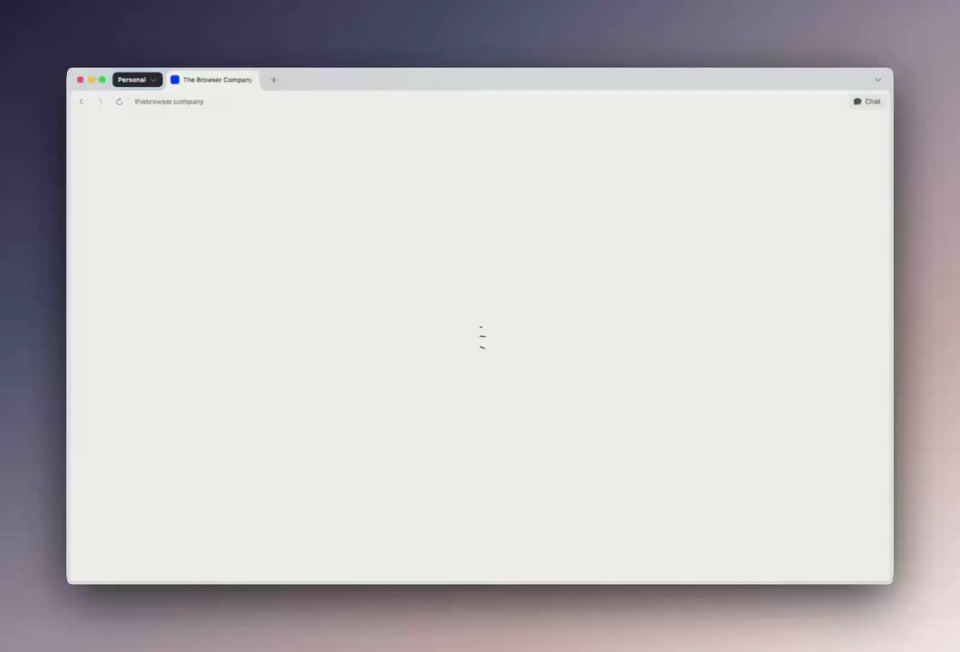
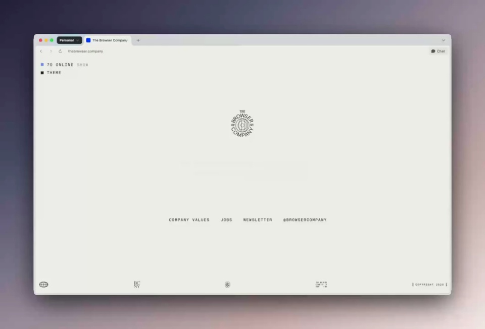
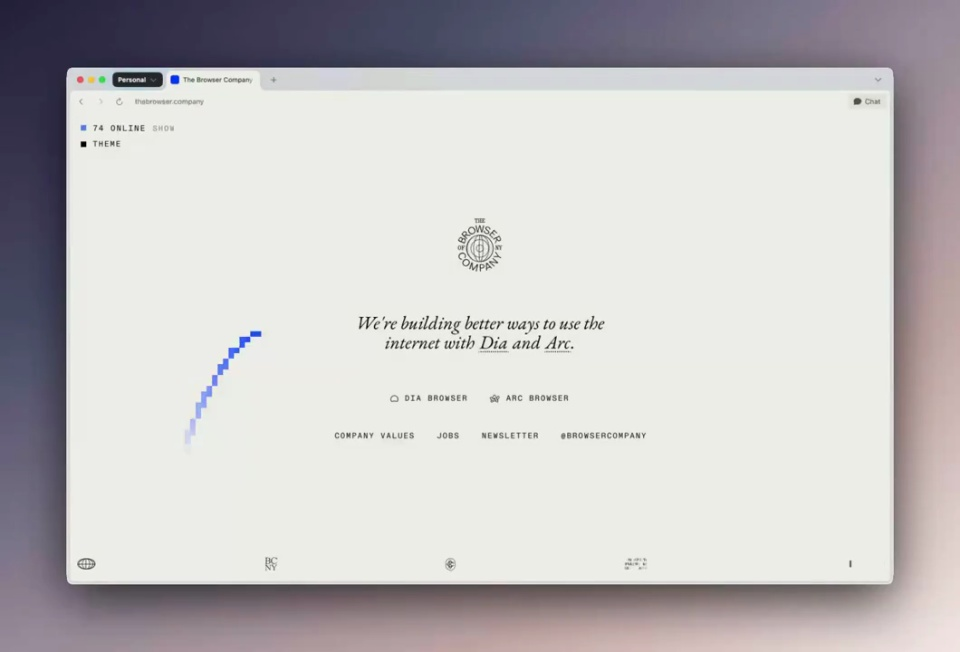
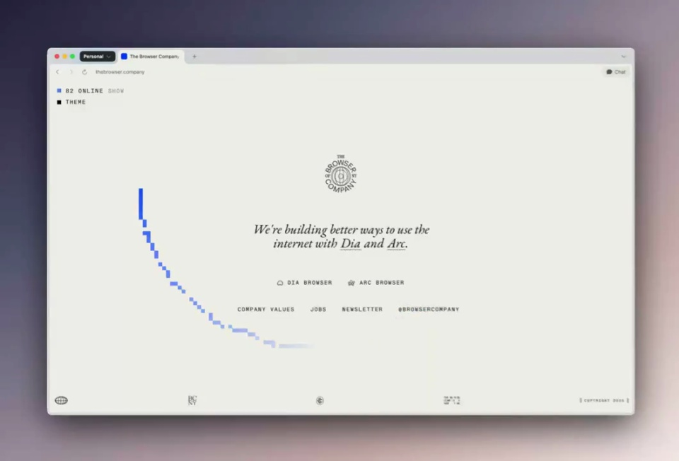
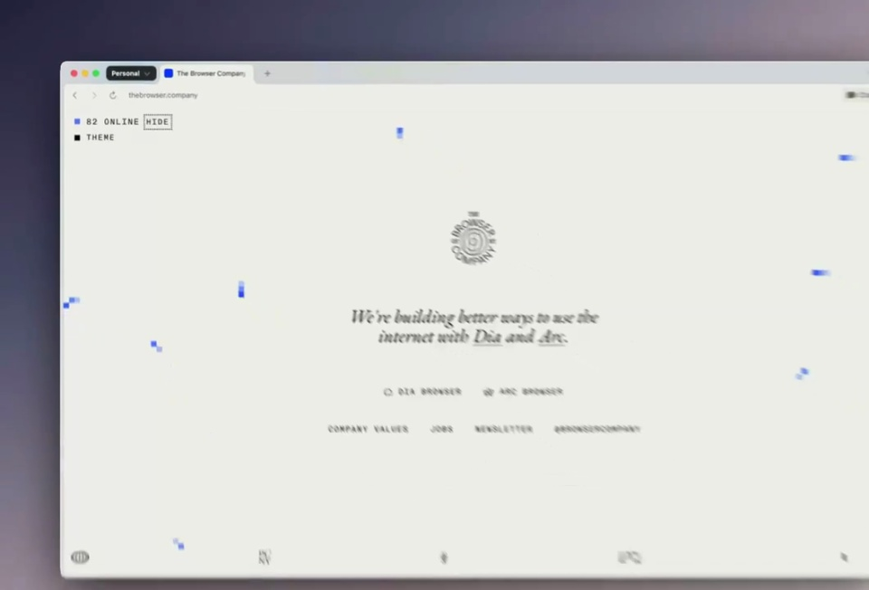
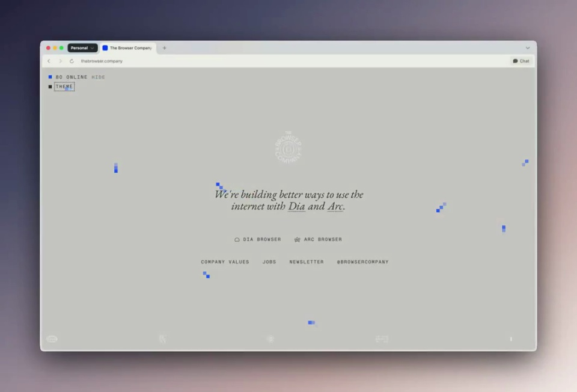

The Browser Company / V136
新产品新视觉
纹章、短句和链接保持居中，页面四角保留少量导航。蓝色光标划弧经过留白，再回到中心文字，形成单一的动态焦点。
构图与编排 可播放 · 可替换内容
整体编排规则示例
查看 HTML 源码
<!doctype html><html lang="zh-CN"><meta charset="utf-8"><meta name="viewport" content="width=device-width,initial-scale=1"><title>新产品新视觉 · sequence</title><style>html,body{margin:0;width:100%;height:100%;overflow:hidden;background:#eeeeE7}canvas{display:block;width:100%;height:100%;object-fit:contain}</style><body data-mode="sequence"><canvas width="1000" height="600"></canvas><script src="data.js"></script><script src="common.js"></script><script src="scene.js"></script><script src="bridge.js"></script></body></html>画面元素浏览器窗中央纹章衬线短句蓝色光标尾迹主题切换
MOTION LANGUAGE
动作与构图
局部动作 · 构图规则
01
让安静网页成为光标的背景
让安静网页成为光标的背景规则示例
查看 HTML 源码
<!doctype html><html lang="zh-CN"><meta charset="utf-8"><meta name="viewport" content="width=device-width,initial-scale=1"><title>新产品新视觉 · sequence</title><style>html,body{margin:0;width:100%;height:100%;overflow:hidden;background:#eeeeE7}canvas{display:block;width:100%;height:100%;object-fit:contain}</style><body data-mode="clip" data-start="5" data-end="8"><canvas width="1000" height="600"></canvas><script src="data.js"></script><script src="common.js"></script><script src="scene.js"></script><script src="bridge.js"></script></body></html>纹章、短句和链接保持居中，页面四角保留少量导航。蓝色光标划弧经过留白，再回到中心文字，形成单一的动态焦点。
02
光标增加，信息位置不变
从一条弧线增加到多个短尾迹，随后切换深色主题。只翻转底色与文字对比，不重新排版，让读者认出是同一张页面。
03
更换身份文案仍保留留白
可以替换公司纹章、两行理念与导航。细衬线主句和较小等宽导航区分语气，光标路径避免长时间遮住标题。
SEQUENCE
段落与节奏
点击段落，定位到上方编排示意。






画面参考 · 离散静帧
KEEP THE RELATIONSHIPS
制作其他主题
- 使用目标公司的纹章与理念，保留静态排版和动态光标。
制作约束
浏览器窗 / 中央纹章 / 衬线短句 / 蓝色光标尾迹 / 主题切换
- 纹章、短句和链接保持居中，页面四角保留少量导航。蓝色光标划弧经过留白，再回到中心文字，形成单一的动态焦点。
- 从一条弧线增加到多个短尾迹，随后切换深色主题。只翻转底色与文字对比，不重新排版，让读者认出是同一张页面。
- 可以替换公司纹章、两行理念与导航。细衬线主句和较小等宽导航区分语气，光标路径避免长时间遮住标题。